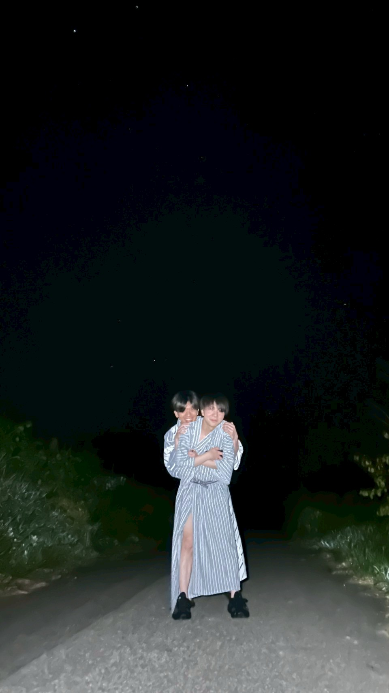
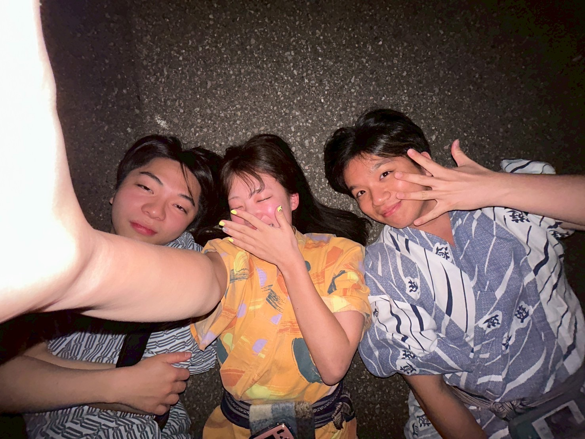

04 / YADO・HOSHI
いさりびの宿と、夜の気配。
夕陽のあとに立ち寄った宿と、その周辺に残った夜の記録。yado と hoshi を同じ時間の続きとしてまとめる。


NOTE
夕陽のあと、宿へ。そして夜空へ。旅の後半を静かに締める場所として、宿と星をひとつのアルバムにした。
夕陽のあとに立ち寄った宿と、その周辺に残った夜の記録。yado と hoshi を同じ時間の続きとしてまとめる。


夕陽のあと、宿へ。そして夜空へ。旅の後半を静かに締める場所として、宿と星をひとつのアルバムにした。